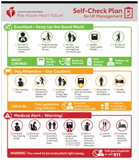
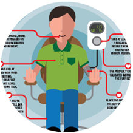
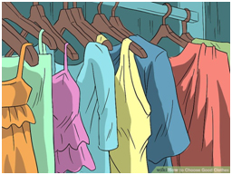

Lifestyle Changes Worth Making
Making some of these lifestyle changes can be easier said than done. But working these changes into your daily routine can make a real difference in your quality of life. Small changes can make a big difference
Quitting smoking
Each puff of nicotine from tobacco smoke temporarily increases heart rate and blood pressure, even as less oxygen-rich blood circulates through the body. Smoking also leads to clumping or stickiness in the blood vessels feeding the heart.
People who quit smoking are more likely to have their heart failure symptoms improve.
Learn more about quitting smoking https://www.heart.org/en/healthy-living/healthy-lifestyle/quit-smoking-tobacco.
Quitting smokingMaintaining or losing weight
Sudden weight gain or loss can be a sign that you’re developing heart failure, or that your heart failure is progressing. Weigh yourself at the same time each morning, preferably before breakfast and after urinating. Notify your healthcare professional if you gain three or more pounds in one day, five or more pounds in one week, or whatever amount you were told to report.
Learn more about maintaining a healthy weight. https://www.heart.org/en/healthy-living/healthy-eating/losing-weight.
Avoiding or limiting alcohol
If you drink alcohol, do so in moderation. This means no more than one to two drinks per day for men and one drink per day for women. Talk to your doctor about whether it’s OK for you to drink alcohol.
Learn more about alcohol and heart disease. https://www.heart.org/en/healthy-living/healthy-eating/eat-smart/nutrition-basics/alcohol-and-heart-health.
Avoiding or limiting caffeine
Consume only a moderate amount of caffeine per day, no more than a cup or two of coffee. Learn more about caffeine and heart disease. https://www.heart.org/en/healthy-living/healthy-eating/eat-smart/nutrition-basics/caffeine-and-heart-disease.
Eating a heart-healthy diet
Eat an overall healthy dietary pattern that emphasizes a variety of fruits and vegetables, whole grains, low-fat dairy products, skinless poultry and fish, nuts and legumes, and non-tropical vegetable oils. Also, limit saturated fat, trans fat, cholesterol, sodium, red meat, sweets and sugar-sweetened beverages. https://www.nhlbi.nih.gov/files/docs/public/heart/hbp_low.pdf.
Being physically active
If you’re not physically active, talk to your doctor about starting an exercise regimen. Schedule physical activity at the same time every day so it becomes a regular part of your lifestyle. If moderate exercise isn’t possible for you, consider participating in a structured rehabilitation program. https://www.heart.org/en/health-topics/heart-failure/treatment-options-for-heart-failure/cardiac-rehab-for-heart-failure.
Managing stress
Take 15 to 20 minutes a day to sit quietly, breathe deeply and think of a peaceful scene. Or try a class in yoga or meditation. (Check with your doctor first before undertaking a strenuous yoga class.) When you get angry, count to 10 before responding to help reduce your stress. Learn more about managing stress. https://www.heart.org/en/healthy-living/healthy-lifestyle/stress-management.

Keeping track of symptoms
Report any changes that concern you to your healthcare professional. https://www.heart.org/en/health-topics/heart-failure/warning-signs-of-heart-failure.

Monitoring your blood pressure
Monitoring blood pressure at home, in addition to regular monitoring in a doctor’s office, can help control high blood pressure. https://www.heart.org/en/health-topics/high-blood-pressure/why-high-blood-pressure-is-a-silent-killer.
Chart your blood pressure readings over time. https://www.heart.org/en/health-topics/high-blood-pressure/understanding-blood-pressure-readings/monitoring-your-blood-pressure-at-home This can reveal trends and help to eliminate false readings.
Find out more about how healthy eating can lower your blood pressure with the DASH eating plan. https://www.heart.org/en/health-topics/high-blood-pressure/changes-you-can-make-to-manage-high-blood-pressure/managing-blood-pressure-with-a-heart-healthy-diet.
Getting adequate rest
To improve your sleep at night, use pillows to prop up your head. Avoid naps and big meals right before bedtime.Try napping after lunch or putting your feet up for a few minutes every couple of hours.
Learn about sleep apnea and heart disease. https://www.heart.org/en/health-topics/consumer-healthcare/what-is-cardiovascular-disease/sleep-apnea-and-heart-disease-stroke.

Selecting appropriate clothing
Avoid tight socks or stockings, such as thigh-high or knee-high hose, that slow blood flow to the legs and cause clots. Avoid temperature extremes as much as possible, too. Dress in layers so that you can add or remove garments as needed.
Back